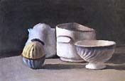

| Giorgio Morandi
(1890-1964)
Italian Realist Painter
Giorgio Morandi was a 20th C Italian artist, who mainly
painted still lifes and landscapes. His still lifes are of particular
interest to the potter - ceramic bowls, jugs, vases and other ceramic
items were the subjects of his paintings, which he almost religiously
painted again and again, sometimes to the extent of painting nearly
the same scene over and over, in order to better capture its essence.

Morandi was initially influenced by Cezanne, the metaphysicist
De Chirico and cubists Braque and Picasso, but he went on to develop
his own unique style. It was for his still lifes that he became
regarded as one of the main proponents of 20th C representational
art.
Morandi's early work included Cezanne-like portraits
and landscapes, then studies inspired by the metaphysicists and
cubists. But he developed a penchant for still-life painting early
in his career, painting his characteristic compositions as early
as the mid 1920s. He went on to develop a style recognizable by
its simple composition, muted colors and a loosely held brush with
resulting free-flowing lines. Importantly to the potter, his still
life subjects were often overlooked everyday ceramic bowls, jugs,
candle sticks, bottles and other mundane objects such as salt &
pepper shakers, egg cups, a copper saucepan or an old oil lamp.
 Morandi's
ceramic objects cannot be attributed to any particular makers, but
amongst them we find a fluted bowl reminiscent of David Leach's
work, a blue & white striped vase that could have been made
by 20th C German potter Hedwig Bollhagen, or italo-french peasant
style water jugs. The color schemes of these wares are simple: plain
white or clear glazes, cobalt blue, muted iron browns or ochre,
but usually understated pastel colors. Morandi's
ceramic objects cannot be attributed to any particular makers, but
amongst them we find a fluted bowl reminiscent of David Leach's
work, a blue & white striped vase that could have been made
by 20th C German potter Hedwig Bollhagen, or italo-french peasant
style water jugs. The color schemes of these wares are simple: plain
white or clear glazes, cobalt blue, muted iron browns or ochre,
but usually understated pastel colors.
On the surface, Morandi's compositions seem random,
but closer scrutiny shows the scenes are contrived, although it
would seem not with that much care. Interestingly, the arrangements
seem to express a domestic situation, e.g. by stacking several bowls
quasi carelessly on top of each other, as if ready for dish washing.
There is little doubt though, that with these studies,
Morandi was trying to glean the essence of painting, by repeating
the same scenes over and over again, with little variation, to transcend
the objects' and the medium's mediocrity, elevating both, and thus
perhaps the also the painter, to a higher plane.
And therein lies the lure of Morandi's still-life
painting - through the representation of the mundane, those objects'
beauty is reinforced in us, and through their repetition, they become
a member of our own family of familiar, visualized objects.
 Potters
can of course also be connoisseurs of other visual arts, and so
it comes as no surprise that the painter, who was inspired by the
ceramic object, has in turn inspired the potter - perhaps a good
example of the old adage "what goes around, comes around".
Gwynn Hanssen Pigott in particular draws inspiration from Morandi's
life's work. Her woodfired pieces include slender bottles and simple,
unadorned bowls, glazed in muted grays, browns and ochres. Her own
ceramic still life arrangements at first mimic, then go beyond Morandi's
scenes. Of his work, Hanssen Pigott says "It is about essence;
the metaphysical expressed through the solidly physical and knowable." Potters
can of course also be connoisseurs of other visual arts, and so
it comes as no surprise that the painter, who was inspired by the
ceramic object, has in turn inspired the potter - perhaps a good
example of the old adage "what goes around, comes around".
Gwynn Hanssen Pigott in particular draws inspiration from Morandi's
life's work. Her woodfired pieces include slender bottles and simple,
unadorned bowls, glazed in muted grays, browns and ochres. Her own
ceramic still life arrangements at first mimic, then go beyond Morandi's
scenes. Of his work, Hanssen Pigott says "It is about essence;
the metaphysical expressed through the solidly physical and knowable."

There is no doubt that other ceramic artists have
also been influenced to some degree by Morandi's dedication to the
still life object - his work appealing to the connoisseur of the
'overlooked' in all of us...
More Ceramics in Art
More Articles
|